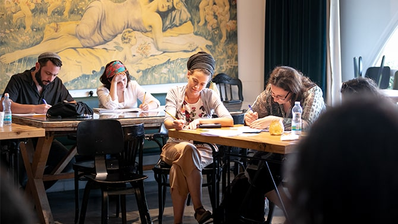

Cover of
The Liberty to Choose, an anthology with essays by the faculty and graduates of the program
Cover of
The Liberty to Choose, an anthology with essays by the faculty and graduates of the program
Jewish culture is the focal point of myriad debates and polemics, politics and disagreements in Israel. Who is a Jew? What should Jews do – or not do? Who should make decisions for the Jewish people? Competing answers to these questions have caused cities to divide, protests to erupt, and governments to fall.
But Jewish Israeli culture is also a powerful creative force, which in the 72 short years of the State of Israel’s existence has created a unique set of holidays, rituals, institutions, and language. Despite societal and political rifts and challenges, Israeli Jewish culture is a vibrant scene – a renaissance of an ancient Jewish tradition interwoven with avant-garde modern innovations. The prominent place that Jewish art and music, television and film, and most recently cuisine now have on the scene of world culture is a testament to this vibrancy.
Can the vibrancy and creativity of Jewish Israeli culture serve as a balm and connector to heal the societal rifts of Israeli and Jewish society? This is what the
Mandel Program for Leadership in Jewish Culture seeks to do. It brings together 20 trailblazing cultural leaders and budding cultural innovators from across Israeli Jewish society and gives them the opportunity to deepen their knowledge, widen their perspectives and networks, professionalize their skills, and create a rich vision for their cultural leadership – and its role in improving Israeli society.
 Faculty and graduates of Cohort 3 of the Mandel Program for Leadership in Jewish Culture
Faculty and graduates of Cohort 3 of the Mandel Program for Leadership in Jewish Culture
The Liberty to Choose
What Jewish culture and identity will Israelis pass on to their children? For decades, Israel has been rocked by debates about what kind of Jewish culture should be included in the education of its younger generation. In the most recent iterations of this debate, some people are concerned about the increasing insertion of Jewish content into the curriculum of non-religious schools (which is called by some Israelis “religification”), while others bemoan the lack of Jewish literacy in Israeli schools.
What kind of Jewish culture do we want to teach our children? At the Mandel Program for Leadership in Jewish Culture, we seek to enrich this debate by turning to moments in Jewish history when these questions arose: from Talmudic times, to 18th century Jewish enlightenment debates, to debates about Hebrew culture in the streets of young Tel Aviv. In the classroom of Cohort 3 of our program, the study of one such debate sparked the creation of a unique online publication called The Liberty to Choose, which explores Jewish culture from Jerusalem of 2020 to Tangiers of 1916 and back again, and includes essays by the faculty and fellows of the program.
 A look inside: Contributors from Cohort 3 listed in
The Liberty to Choose
A look inside: Contributors from Cohort 3 listed in
The Liberty to Choose
Among the long-forgotten pages of the French newspaper La Liberté, published in Tangiers between 1915-1922, are the textual remains of a roiling debate on the nature of Jewish culture in Jewish Moroccan schools. Over a period of a year, the newspaper was rocked by op-eds advocating a universalist view of Judaism rather than a traditionalist view, and contrasting a holistic Jewish view combining old and new, with a more reformative approach. The articles were written by writers residing in Morocco, New York, Argentina, and Israel.
 The French newspaper La Liberté, published in Tangiers between 1915-1922
The French newspaper La Liberté, published in Tangiers between 1915-1922
The essays were translated from the original French to Hebrew for the first time for a course taught by Mandel faculty member
Dr. David Guedj as part of the Mandel Program for Leadership in Jewish Culture. The essays resonated deeply with the program’s fellows, who appreciated the contemporary challenges found in these century-old essays, which were written in a respectful debate style and set in the unique setting of North African modernity interspersed with French culture and Jewish community life. The fellows were energized by the fact that similar debates that took place in Europe, the United States, and Israel were well known, while debates that had taken place in Muslim lands had mostly been forgotten. This inspired the group to re-engage with this debate, and add their own reflections to the conversation.
 Dr. David Guedj, editor of The Liberty to Choose
Dr. David Guedj, editor of The Liberty to Choose
As a result, each Mandel Jewish Culture fellow wrote their own essay with their personal reflections on Jewish cultural education, in response to the La Liberté debate. The program’s faculty members – including
Dr. Ruth Calderon,
Dr. Jeremy Fogel,
Malka Puterkovsky, program director
Mishael Zion, and Mandel Leadership Institute director
Yael Hess – as well as guest lecturers
Professor David Banon and
Professor Zohar Shavit, also joined the "fray," creating a rich discourse on the question of what Jewish culture should be the focus of education of our children and of our "public square."
Since one of the goals of the Mandel Program for Leadership in Jewish Culture is to deepen the discourse of Jewish culture not only among the fellows but within Israeli society at large, the Hebrew translations of the original French essays were published alongside the new essays written by the fellows in an online edition available to Hebrew readers the world over. Nothing, perhaps, embodies “Jewish culture” more than interpolating Jewish texts and bringing them into a relevant debate in contemporary communities. The Hebrew volume, which is available for download here, will be the focus of a special online event hosted by the Mandel Leadership Institute on January 7, 2021.
Reaching Back to Create a New Culture
As Israel enters its eighth decade, its culture is increasingly being led by a generation whose grandparents immigrated to Israel, and who are now raising their own children and wondering: What story should Israel tell? This is a generation whose grandparents immigrated to Israel in the years before and after its founding, and who subsequently toiled to create the new Israeli state, society, and culture. While the second generation often sought to put aside its cultural heritage in order to blend in to the new Israeli society, which often demanded a denial of diaspora culture, the third generation is blazing a new path.

Comfortable in their "Israeliness" in a way the first and second generation immigrants weren’t, the current generation of Israeli “grandchildren” are reaching back to the stories, sounds, and tastes of their grandparents, in order to move forward and infuse Israeli society with the rich voices of forgotten diasporas, neglected cultures, and overlooked traditions. Whether they come from North Africa or the Middle East, Eastern Europe or Western Europe, or – as is often the case – from a mixture of these countries, these grandchildren are digging deep into their past in order to create a vibrant Israeli culture for future generations. At the same time, the children of immigrants who have come more recently from North America, the Former Soviet Union, and Ethiopia, have caught on fast, adopting this more multi-cultural vision of Israeli Judaism and becoming a part of it.
 Israeli “grandchildren” explore the cultural heritage of their ancestors to inform their cultural work
Israeli “grandchildren” explore the cultural heritage of their ancestors to inform their cultural work
At the Mandel Program for Leadership in Jewish Culture, these questions have been a powerful issue for many of the fellows. Cohort 3, which ended its year of study in the Summer of 2020, included many cultural figures who explored their ancestors’ culture both before and during their participation in the program in order to bring the sounds and movement of that culture into their lives, their work, and into modern day Israel:
Musician Neta Elkayam, translated her special connection with her grandmother into a ground-breaking musical path which takes Judeo-Arabic texts and the rich tradition of Jewish Moroccan music and reproduces it, with a contemporary sound, on stages around the world. A 2019 documentary film about her work with her partner Amit Hai Cohen was produced by Morrocan Muslim documentarian Kamal Hachkar, and titled “In Your Eyes, I See My Country” (watch the trailer here). As an example of the connections made during her year at Mandel, her most recent song, Jai Men Blado, combines a Jewish Russian folk tune with Judeo-Arabic words. With the help of her Mandel colleague Alexandra Mandelbaum, also a fellow in the program, she added a verse in Russian to the song.
Neta Elkayam: Jai Men Blado
Orian Shukrun, the 27-year-old musical director and conductor of El Maghribia – the Andalusian Orchestra of Maalot Tarshiha, in Israel’s Galilee, creates a unique blend of Western and Andalusian music that is reverberating across Israel.
Orian Shukrun, Touchia el Maghribia, The Israeli Andalusian Orchestra
Online-community manager Einat Levy uses social media to reconnect immigrants from Diasporic communities back to their geographical roots. Her most popular Facebook group, which connects descendants of the Jewish community of Fes in Morocco, is called The Jewish Fes-Book Project. She is also the force behind The Moroccan Jewish Story in 360, which offers virtual tours of Moroccan Jewish heritage sites via the Internet.
 Four of 15 virtual tours of Fes available on The Moroccan Jewish Story in 360: Iben Danan Synagogue, Slat Al Fassiyin Synagogue, the Medina, and the Mellah Sefrou
Four of 15 virtual tours of Fes available on The Moroccan Jewish Story in 360: Iben Danan Synagogue, Slat Al Fassiyin Synagogue, the Medina, and the Mellah Sefrou
Orly Portal, previously a BatSheva dancer and currently a nationally renowned choreographer, has created a unique dance language inspired by Moroccan dance and body language. Her approach has drawn dancers from around the world to study at her feet.
The graduates presented above are all examples of program participants who have delved into the culture of the once large Jewish community in Morocco. But that is just one example of the cultural creations of these Israeli “grandchildren.” Other current fellows have had the cultural richness of their families from Thessaloniki, Moldova, Yemen, Persia, Tunisia, and New York inform their work. The richness of the Diasporic traditions of this third generation enriches the vibrancy of Jewish Israeli society, giving it new sounds, ideas, and tools to deal with the challenges of 21st century identity.
-
Cover of -
Faculty and graduates of Cohort 3 of the Mandel Program for Leadership in Jewish Culture -
A look inside: Contributors from Cohort 3 listed in The Liberty to Choose -
The French newspaper La Liberté, published in Tangiers between 1915-1922 -
Dr. David Guedj, editor of The Liberty to Choose -
-
Israeli “grandchildren” explore the cultural heritage of their ancestors to inform their cultural work
{kind=link}
{kind=link}